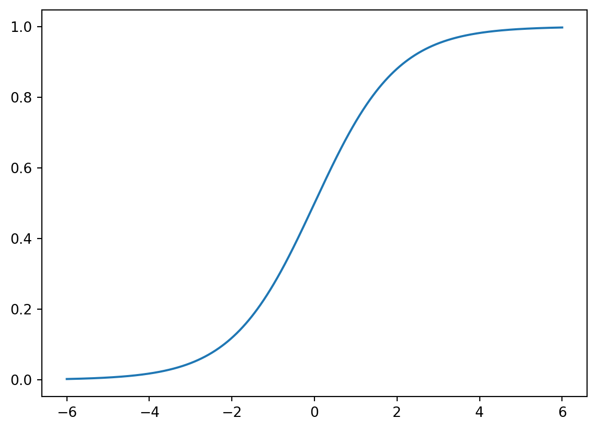
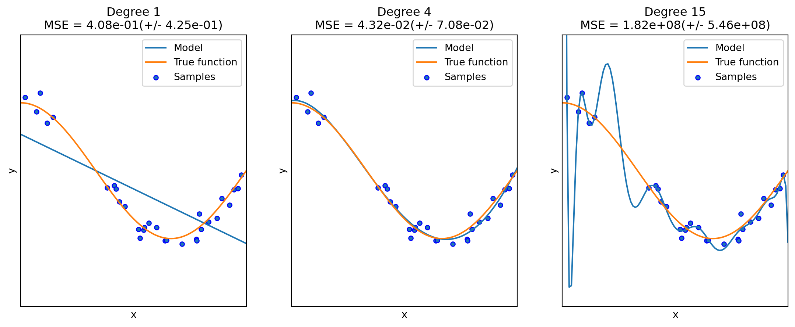
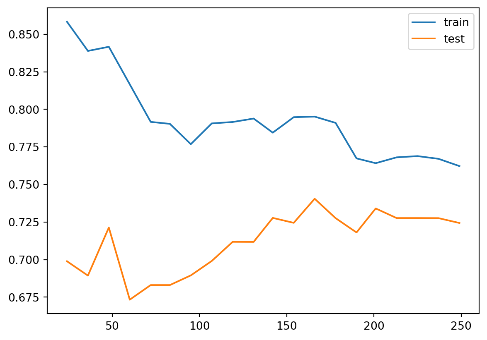

6 Logistic regression
Logistic regression is very similar to linear regression, but applied to classification problems. In this chpater our idea is to treat it as the simplest example of a neural network instead of using other methods. The code we developped in the last chapter will be used extensively.
6.1 Basic idea
Assume that we have a binary classfification problem with \(N\) features. Our model starts from the logit instead of the label \(y\) itself.
\[ logit(y)=\theta_0+\sum_{j=1}^N\theta_jx_j. \]
The logit function is used to describe the logorithm of the binary odds. The odd ratio is the ratio between the probability of success and the probability of failure. Assume the probability of success is \(p\). Then
\[ oddratio(p)=\frac{p}{1-p},\quad logit(p)=z = \log\left(\frac{p}{1-p}\right). \] We could solve the logit function, and get its inverse: the function is the Sigmoid function. Once we have the logit value, we could use it to get the probability. \[ p=\sigma(z)=\frac{1}{1+\mathrm{e}^{-z}}. \]
Therefore the model for Logistic regression is as follows:
\[ p=\sigma(L(x))=\sigma\left(\theta_0+\sum_{j=1}^n\theta_jx_j\right)=\sigma\left(\Theta \hat{x}^T\right). \]
6.1.1 Sigmoid function
The Sigmoid function is defined as follows:
\[ \sigma(z)=\frac{1}{1+\mathrm{e}^{-z}}. \] The graph of the function is shown below.
The main properties of \(\sigma\) are listed below as a Lemma.
Lemma 6.1 The Sigmoid function \(\sigma(z)\) satisfies the following properties.
- \(\sigma(z)\rightarrow \infty\) when \(z\mapsto \infty\).
- \(\sigma(z)\rightarrow -\infty\) when \(z\mapsto -\infty\).
- \(\sigma(0)=0.5\).
- \(\sigma(z)\) is always increasing.
- \(\sigma'(z)=\sigma(z)(1-\sigma(z))\).
Solution. We will only look at the last one.
\[ \begin{split} \sigma'(z)&=-\frac{(1+\mathrm e^{-z})'}{(1+\mathrm e^{-z})^2}=\frac{\mathrm e^{-z}}{(1+\mathrm e^{-z})^2}=\frac{1}{1+\mathrm e^{-z}}\frac{\mathrm e^{-z}}{1+\mathrm e^{-z}}\\ &=\sigma(z)\left(\frac{1+\mathrm e^{-z}}{1+\mathrm e^{-z}}-\frac{1}{1+\mathrm e^{-z}}\right)=\sigma(z)(1-\sigma(z)). \end{split} \]
6.1.2 Gradient descent
We would like to use Gradient descent to sovle Logistic regression problems. For binary classification problem, the cost function is defined to be
\[ J(\Theta)=-\frac1m\sum_{i=1}^m\left[y^{(i)}\log(p^{(i)})+(1-y^{(i)})\log(1-p^{(i)})\right]. \] Here \(m\) is the number of data points, \(y^{(i)}\) is the labelled result (which is either \(0\) or \(1\)), \(p^{(i)}\) is the predicted value (which is between \(0\) and \(1\)).
Note
The algorithm gets its name since we are using the gradient to find a direction to lower our height.
6.1.3 The Formulas
Theorem 6.1 The gradient of \(J\) is computed by
\[ \nabla J =\frac1m(\textbf{p}-\textbf{y})^T\hat{\textbf{X}}. \tag{6.1}\]
Click for details.
Proof. The formula is an application of the chain rule for the multivariable functions.
\[ \begin{split} \dfrac{\partial p}{\partial \theta_k}&=\dfrac{\partial}{\partial \theta_k}\sigma\left(\theta_0+\sum_{j=1}^n\theta_jx_j\right)=\dfrac{\partial}{\partial \theta_k}\sigma(L(\Theta))\\ &=\sigma(L)(1-\sigma(L))\dfrac{\partial}{\partial \theta_k}\left(\theta_0+\sum_{j=1}^n\theta_jx_j\right)\\ &=\begin{cases} p(1-p)&\text{ if }k=0,\\ p(1-p)x_k&\text{ otherwise}. \end{cases} \end{split} \] Then
\[ \nabla p = \left(\frac{\partial p}{\partial\theta_0},\ldots,\frac{\partial p}{\partial\theta_n}\right) = p(1-p)\hat{x}. \]
Then
\[ \nabla \log(p) = \frac{\nabla p}p =\frac{p(1-p)\hat{x}}{p}=(1-p)\hat{x}. \]
\[ \nabla \log(1-p) = \frac{-\nabla p}{1-p} =-\frac{p(1-p)\hat{x}}{1-p}=-p\hat{x}. \]
Then
\[ \begin{split} \nabla J& = -\frac1m\sum_{i=1}^m\left[y^{(i)}\nabla \log(p^{(i)})+(1-y^{(i)})\nabla \log(1-p^{(i)})\right]\\ &=-\frac1m\sum_{i=1}^m\left[y^{(i)}(1-p^{(i)})\hat{x}^{(i)}+(1-y^{(i)})(-p^{(i)}\hat{x}^{(i)})\right]\\ &=-\frac1m\sum_{i=1}^m\left[(y^{(i)}-p^{(i)})\hat{x}^{(i)}\right]. \end{split} \]
We write \(\hat{x}^{(i)}\) as row vectors, and stack all these row vectors vertically. What we get is a matrix \(\hat{\textbf X}\) of the size \(m\times (1+n)\). We stack all \(y^{(i)}\) (resp. \(p^{(i)}\)) vectically to get the \(m\)-dim column vector \(\textbf y\) (resp. \(\textbf p\)).
Using this notation, the previous formula becomes
\[ \nabla J =\frac1m(\textbf{p}-\textbf{y})^T\hat{\textbf{X}}. \]
After the gradient can be computed, we can start to use the gradient descent method. Note that, although \(\Theta\) are not explicitly presented in the formula of \(\nabla J\), this is used to modify \(\Theta\):
\[ \Theta_{s+1} = \Theta_s - \alpha\nabla J. \]
Note
If you directly use library, like sklearn or PyTorch, they will handle the concrete computation of these gradients.
6.2 Regularization
6.2.1 Three types of errors
Every estimator has its advantages and drawbacks. Its generalization error can be decomposed in terms of bias, variance and noise. The bias of an estimator is its average error for different training sets. The variance of an estimator indicates how sensitive it is to varying training sets. Noise is a property of the data.
6.2.2 Underfit vs Overfit
When fit a model to data, it is highly possible that the model is underfit or overfit.
Roughly speaking, underfit means the model is not sufficient to fit the training samples, and overfit means that the models learns too many noise from the data. In many cases, high bias is related to underfit, and high variance is related to overfit.
The following example is from the sklearn guide. Although it is a polynomial regression example, it grasps the key idea of underfit and overfit.

6.2.3 Learning curves (accuracy vs training size)
A learning curve shows the validation and training score of an estimator for varying a key hyperparameter. In most cases the key hyperparameter is the training size or the number of epochs. It is a tool to find out how much we benefit from altering the hyperparameter by training more data or training for more epochs, and whether the estimator suffers more from a variance error or a bias error.
sklearn provides sklearn.model_selection.learning_curve() to generate the values that are required to plot such a learning curve. However this function is just related to the sample size. If we would like to talk about epochs, we need other packages.
Let us first look at the learning curve about sample size. The official document page is here. The function takes input estimator, dataset X, y, and an arry-like argument train_sizes. The dataset (X, y) will be split into pieces using the cross-validation technique. The number of pieces is set by the argument cv. The default value is cv=5. For details about cross-validation please see Section 2.2.5.
Then the model is trained over a random sample of the training set, and evaluate the score over the test set. The size of the sample of the training set is set by the argument train_sizes. This argument is array-like. Therefore the process will be repeated several times, and we can see the impact of increasing the training size.
The output contains three pieces. The first is train_sizes_abs which is the number of elements in each training set. This output is mainly for reference. The difference between the output and the input train_sizes is that the input can be float which represents the percentagy. The output is always the exact number of elements.
The second output is train_scores and the third is test_scores, both of which are the scores we get from the training and testing process. Note that both are 2D numpy arrays, of the size (number of different sizes, cv). Each row is a 1D numpy array representing the cross-validation scores, which is corresponding to a train size. If we want the mean as the cross-validation score, we could use train_scores.mean(axis=1).
After understanding the input and output, we could plot the learning curve. We still use the horse colic as the example. The details about the dataset can be found here.
import pandas as pd
import numpy as np
url = 'http://archive.ics.uci.edu/ml/machine-learning-databases/horse-colic/horse-colic.data'
df = pd.read_csv(url, delim_whitespace=True, header=None)
df = df.replace("?", np.NaN)
df.fillna(0, inplace=True)
df.drop(columns=[2, 24, 25, 26, 27], inplace=True)
df[23].replace({1: 1, 2: 0}, inplace=True)
X = df.iloc[:, :-1].to_numpy().astype(float)
y = df[23].to_numpy().astype(int)
from sklearn.model_selection import train_test_split
X_train, X_test, y_train, y_test = train_test_split(X, y, test_size=0.15, random_state=42)C:\Users\Xinli\AppData\Local\Temp\ipykernel_49168\73942173.py:5: FutureWarning: The 'delim_whitespace' keyword in pd.read_csv is deprecated and will be removed in a future version. Use ``sep='\s+'`` instead
df = pd.read_csv(url, delim_whitespace=True, header=None)
C:\Users\Xinli\AppData\Local\Temp\ipykernel_49168\73942173.py:10: FutureWarning: A value is trying to be set on a copy of a DataFrame or Series through chained assignment using an inplace method.
The behavior will change in pandas 3.0. This inplace method will never work because the intermediate object on which we are setting values always behaves as a copy.
For example, when doing 'df[col].method(value, inplace=True)', try using 'df.method({col: value}, inplace=True)' or df[col] = df[col].method(value) instead, to perform the operation inplace on the original object.
df[23].replace({1: 1, 2: 0}, inplace=True)We use the model LogisticRegression. The following code plot the learning curve for this model.
from sklearn.linear_model import LogisticRegression
from sklearn.preprocessing import MinMaxScaler
from sklearn.pipeline import Pipeline
clf = LogisticRegression(max_iter=1000)
steps = [('scalar', MinMaxScaler()),
('log', clf)]
pipe = Pipeline(steps=steps)
from sklearn.model_selection import learning_curve
import numpy as np
train_sizes, train_scores, test_scores = learning_curve(pipe, X_train, y_train,
train_sizes=np.linspace(0.1, 1, 20))
import matplotlib.pyplot as plt
plt.plot(train_sizes, train_scores.mean(axis=1), label='train')
plt.plot(train_sizes, test_scores.mean(axis=1), label='test')
plt.legend()
The learning curve is a primary tool for us to study the bias and variance. Usually
- If the two training curve and the testing curve are very close to each other, this means that the variance is low. Otherwise the variance is high, and this means that the model probabily suffer from overfitting.
- If the absolute training curve score is high, this means that the bias is low. Otherwise the bias is high, and this means that the model probabily suffer from underfitting.
In the above example, although regularization is applied by default, you may still notice some overfitting there.
6.2.4 Regularization
Regularization is a technique to deal with overfitting. Here we only talk about the simplest method: ridge regression, also known as Tikhonov regularizaiton. Because of the formula given below, it is also called \(L_2\) regularization. The idea is to add an additional term \(\dfrac{\alpha}{2m}\sum_{i=1}^m\theta_i^2\) to the original cost function. When training with the new cost function, this additional term will force the parameters in the original term to be as small as possible. After finishing training, the additional term will be dropped, and we use the original cost function for validation and testing. Note that in the additional term \(\theta_0\) is not presented.
The hyperparameter \(\alpha\) is the regularization strength. If \(\alpha=0\), the new cost function becomes the original one; If \(\alpha\) is very large, the additional term dominates, and it will force all parameters to be almost \(0\). In different context, the regularization strength is also given by \(C=\dfrac{1}{2\alpha}\), called inverse of regularization strength.
6.2.4.1 The math of regularization
Theorem 6.2 The gradient of the ridge regression cost function is
\[ \nabla J=\frac1m(\textbf{p}-\textbf{y})^T\hat{\textbf{X}}+\frac{\alpha}{m}\Theta. \]
Note that \(\Theta\) doesn’t contain \(\theta_0\), or you may treat \(\theta_0=0\).
The computation is straightforward.
6.2.4.2 The code
Regularization is directly provided by the logistic regression functions.
- In
LogisticRegression, the regularization is given by the argumentpenaltyandC.penaltyspecifies the regularizaiton method. It isl2by default, which is the method above.Cis the inverse of regularization strength, whose default value is1. - In
SGDClassifier, the regularization is given by the argumentpenaltyandalpha.penaltyis the same as that inLogisticRegression, andalphais the regularization strength, whose default value is0.0001.
Let us see the above example.
clf = LogisticRegression(max_iter=1000, C=0.1)
steps = [('scalar', MinMaxScaler()),
('log', clf)]
pipe = Pipeline(steps=steps)
from sklearn.model_selection import learning_curve
import numpy as np
train_sizes, train_scores, test_scores = learning_curve(pipe, X_train, y_train,
train_sizes=np.linspace(0.1, 1, 20))
import matplotlib.pyplot as plt
plt.plot(train_sizes, train_scores.mean(axis=1), label='train')
plt.plot(train_sizes, test_scores.mean(axis=1), label='test')
plt.legend()
After we reduce C from 1 to 0.1, the regularization strength is increased. Then you may find that the gap between the two curves are reduced. However the overall performace is also reduced, from 85%~90% in C=1 case to around 80% in C=0.1 case. This means that the model doesn’t fit the data well as the previous one. Therefore this is a trade-off: decrease the variance but increase the bias.
6.3 Neural network implement of Logistic regression
In the previous sections, we use gradient descent to run the Logistic regression model. We mentioned some important concepts, like epochs, mini-batch, etc.. We are going to use PyTorch to implement it. We will reuse many codes we wrote in the previous chapter.
6.3.1 Example
We still use the horse colic dataset as an example. We first prepare the dataset.
import pandas as pd
import numpy as np
from sklearn.model_selection import train_test_split
url = 'http://archive.ics.uci.edu/ml/machine-learning-databases/horse-colic/horse-colic.data'
df = pd.read_csv(url, sep=r'\s+', header=None)
df = df.replace("?", np.NaN)
df = df.fillna(0)
df = df.drop(columns=[2, 24, 25, 26, 27])
df[23] = df[23].replace({1: 1, 2: 0})
X = df.iloc[:, :-1].to_numpy().astype(float)
y = df[23].to_numpy().astype(int)
SEED = 42
X_train, X_test, y_train, y_test = train_test_split(X, y, test_size=0.15, random_state=SEED)We need to perform normalization before throwing the data into the model. Here we use the MinMaxScaler() from sklearn package.
from sklearn.preprocessing import MinMaxScaler
mms = MinMaxScaler()
X_train = mms.fit_transform(X_train, y_train)
X_test = mms.transform(X_test)Then we write a Dataset class to build the dataset and create the dataloaders. Since the set is already split, we don’t need to random_split here.
import torch
from torch.utils.data import Dataset, DataLoader
class MyData(Dataset):
def __init__(self, X, y):
self.X = torch.tensor(X, dtype=float)
self.y = torch.tensor(y, dtype=float).reshape(-1, 1)
def __getitem__(self, index):
return (self.X[index], self.y[index])
def __len__(self):
return len(self.y)
train_set = MyData(X_train, y_train)
val_set = MyData(X_test, y_test)
train_loader = DataLoader(train_set, batch_size=32, shuffle=True)
val_loader = DataLoader(val_set, batch_size=32)In the following code, we first set up the original model.
import torch.nn as nn
from torch.nn.modules import Linear
class LoR(nn.Module):
def __init__(self, *args, **kwargs) -> None:
super().__init__(*args, **kwargs)
self.linear = Linear(in_features=22, out_features=1, dtype=float)
self.activation = nn.Sigmoid()
def forward(self, X):
# pred = self.activation(self.linear(X))
pred = self.linear(X)
# return (pred >= 0).float()
return predThen we derive the base ModelTemplate class.
class LoRModel(ModelTemplate):
def __init__(self, model, loss_fn, optimizer):
super().__init__(model, loss_fn, optimizer)
self.stats['acc_train'] = []
self.stats['acc_val'] = []
def compute_acc(self, dataloader):
with torch.no_grad():
acc = []
for X_batch, y_batch in dataloader:
yhat = torch.sigmoid(self.model(X_batch))
y_pred = (yhat>=0.5).to(float)
acc.append((y_pred==y_batch).sum().item())
# print(acc_train)
return np.sum(acc)/len(dataloader.dataset)
def log_update(self, train_time, loss, val_time, val_loss, train_loader, val_loader):
super().log_update(train_time, loss, val_time, val_loss, train_loader, val_loader)
acc_train = self.compute_acc(train_loader)
acc_val = self.compute_acc(val_loader)
self.stats['acc_train'].append(acc_train)
self.stats['acc_val'].append(acc_val)
# p = self.model.state_dict()
# self.stats['acc'].append([p['linear.bias'].item(), p['linear.weight'].item()])
def log_output(self, verbose=0):
s = super().log_output(verbose=0, formatstr=':.6f')
s.append(f'acc_train: {self.stats['acc_train'][-1]:.6f}')
s.append(f'acc_val: {self.stats['acc_val'][-1]:.6f}')
# s.append(f'p: [{self.stats['p'][-1][0]:.6f}, {self.stats['p'][-1][1]:.6f}]')
if verbose == 1:
print(' '.join(s))
return sfrom torch.optim import SGD
from torch.nn import BCEWithLogitsLoss, BCELoss
original_model = LoR()
model = LoRModel(model=original_model, loss_fn=BCEWithLogitsLoss(),
optimizer=SGD(original_model.parameters(), lr = 0.1))
model.train(train_loader, val_loader, epoch_num=100, verbose=1)epoch 1 train_time: 0.026031 loss: 0.692410 val_time: 0.003061 val_loss: 0.627087 acc_train: 0.627451 acc_val: 0.688889
epoch 2 train_time: 0.010491 loss: 0.652692 val_time: 0.001000 val_loss: 0.609877 acc_train: 0.627451 acc_val: 0.688889
epoch 3 train_time: 0.009510 loss: 0.635841 val_time: 0.002000 val_loss: 0.590118 acc_train: 0.627451 acc_val: 0.688889
epoch 4 train_time: 0.007524 loss: 0.623492 val_time: 0.000997 val_loss: 0.581516 acc_train: 0.627451 acc_val: 0.688889
epoch 5 train_time: 0.009110 loss: 0.614160 val_time: 0.002263 val_loss: 0.573444 acc_train: 0.627451 acc_val: 0.711111
epoch 6 train_time: 0.010945 loss: 0.605191 val_time: 0.002010 val_loss: 0.567160 acc_train: 0.623529 acc_val: 0.711111
epoch 7 train_time: 0.011597 loss: 0.595647 val_time: 0.002012 val_loss: 0.565006 acc_train: 0.650980 acc_val: 0.711111
epoch 8 train_time: 0.010981 loss: 0.587077 val_time: 0.001997 val_loss: 0.559978 acc_train: 0.670588 acc_val: 0.688889
epoch 9 train_time: 0.009526 loss: 0.581139 val_time: 0.004566 val_loss: 0.558800 acc_train: 0.686275 acc_val: 0.711111
epoch 10 train_time: 0.010691 loss: 0.573550 val_time: 0.002012 val_loss: 0.552963 acc_train: 0.698039 acc_val: 0.688889
epoch 11 train_time: 0.013057 loss: 0.567221 val_time: 0.001998 val_loss: 0.546816 acc_train: 0.701961 acc_val: 0.688889
epoch 12 train_time: 0.011427 loss: 0.561712 val_time: 0.002520 val_loss: 0.542746 acc_train: 0.713725 acc_val: 0.666667
epoch 13 train_time: 0.013263 loss: 0.556938 val_time: 0.002014 val_loss: 0.542486 acc_train: 0.737255 acc_val: 0.688889
epoch 14 train_time: 0.011984 loss: 0.551774 val_time: 0.001000 val_loss: 0.541814 acc_train: 0.745098 acc_val: 0.688889
epoch 15 train_time: 0.011615 loss: 0.548951 val_time: 0.000999 val_loss: 0.537785 acc_train: 0.741176 acc_val: 0.688889
epoch 16 train_time: 0.012518 loss: 0.542220 val_time: 0.000999 val_loss: 0.534548 acc_train: 0.741176 acc_val: 0.688889
epoch 17 train_time: 0.012544 loss: 0.538324 val_time: 0.001301 val_loss: 0.531510 acc_train: 0.737255 acc_val: 0.711111
epoch 18 train_time: 0.012636 loss: 0.534326 val_time: 0.001989 val_loss: 0.529663 acc_train: 0.745098 acc_val: 0.711111
epoch 19 train_time: 0.010523 loss: 0.530893 val_time: 0.001000 val_loss: 0.528623 acc_train: 0.745098 acc_val: 0.711111
epoch 20 train_time: 0.013565 loss: 0.526439 val_time: 0.002002 val_loss: 0.526963 acc_train: 0.737255 acc_val: 0.711111
epoch 21 train_time: 0.011507 loss: 0.523326 val_time: 0.000996 val_loss: 0.524094 acc_train: 0.741176 acc_val: 0.711111
epoch 22 train_time: 0.010525 loss: 0.519909 val_time: 0.001011 val_loss: 0.520526 acc_train: 0.741176 acc_val: 0.711111
epoch 23 train_time: 0.014093 loss: 0.517783 val_time: 0.002012 val_loss: 0.524199 acc_train: 0.760784 acc_val: 0.688889
epoch 24 train_time: 0.008948 loss: 0.514302 val_time: 0.001123 val_loss: 0.519917 acc_train: 0.760784 acc_val: 0.688889
epoch 25 train_time: 0.010410 loss: 0.511550 val_time: 0.002524 val_loss: 0.517309 acc_train: 0.760784 acc_val: 0.688889
epoch 26 train_time: 0.011788 loss: 0.509695 val_time: 0.001085 val_loss: 0.518875 acc_train: 0.772549 acc_val: 0.711111
epoch 27 train_time: 0.009179 loss: 0.506055 val_time: 0.002450 val_loss: 0.518615 acc_train: 0.776471 acc_val: 0.688889
epoch 28 train_time: 0.013106 loss: 0.504401 val_time: 0.002412 val_loss: 0.513253 acc_train: 0.776471 acc_val: 0.711111
epoch 29 train_time: 0.010534 loss: 0.501465 val_time: 0.001031 val_loss: 0.515084 acc_train: 0.780392 acc_val: 0.688889
epoch 30 train_time: 0.010514 loss: 0.499432 val_time: 0.001988 val_loss: 0.511518 acc_train: 0.784314 acc_val: 0.711111
epoch 31 train_time: 0.010056 loss: 0.497888 val_time: 0.002010 val_loss: 0.513222 acc_train: 0.784314 acc_val: 0.688889
epoch 32 train_time: 0.010761 loss: 0.494562 val_time: 0.002010 val_loss: 0.507340 acc_train: 0.784314 acc_val: 0.711111
epoch 33 train_time: 0.010147 loss: 0.493165 val_time: 0.001022 val_loss: 0.509089 acc_train: 0.784314 acc_val: 0.688889
epoch 34 train_time: 0.011519 loss: 0.490244 val_time: 0.001817 val_loss: 0.509378 acc_train: 0.784314 acc_val: 0.688889
epoch 35 train_time: 0.011365 loss: 0.489067 val_time: 0.002219 val_loss: 0.507884 acc_train: 0.780392 acc_val: 0.688889
epoch 36 train_time: 0.011341 loss: 0.487054 val_time: 0.001994 val_loss: 0.509482 acc_train: 0.780392 acc_val: 0.688889
epoch 37 train_time: 0.013555 loss: 0.484665 val_time: 0.002000 val_loss: 0.506997 acc_train: 0.780392 acc_val: 0.711111
epoch 38 train_time: 0.009275 loss: 0.483160 val_time: 0.001002 val_loss: 0.506836 acc_train: 0.784314 acc_val: 0.688889
epoch 39 train_time: 0.011241 loss: 0.481378 val_time: 0.001127 val_loss: 0.505223 acc_train: 0.784314 acc_val: 0.688889
epoch 40 train_time: 0.012624 loss: 0.479956 val_time: 0.002517 val_loss: 0.503222 acc_train: 0.788235 acc_val: 0.688889
epoch 41 train_time: 0.012966 loss: 0.478671 val_time: 0.001000 val_loss: 0.505004 acc_train: 0.784314 acc_val: 0.688889
epoch 42 train_time: 0.011547 loss: 0.476852 val_time: 0.002002 val_loss: 0.503714 acc_train: 0.788235 acc_val: 0.688889
epoch 43 train_time: 0.014060 loss: 0.475048 val_time: 0.002005 val_loss: 0.506144 acc_train: 0.788235 acc_val: 0.688889
epoch 44 train_time: 0.010523 loss: 0.473206 val_time: 0.001998 val_loss: 0.501974 acc_train: 0.788235 acc_val: 0.711111
epoch 45 train_time: 0.009708 loss: 0.470979 val_time: 0.001997 val_loss: 0.499234 acc_train: 0.788235 acc_val: 0.711111
epoch 46 train_time: 0.009526 loss: 0.470202 val_time: 0.002000 val_loss: 0.500705 acc_train: 0.792157 acc_val: 0.711111
epoch 47 train_time: 0.009771 loss: 0.468638 val_time: 0.001004 val_loss: 0.500395 acc_train: 0.800000 acc_val: 0.711111
epoch 48 train_time: 0.014464 loss: 0.468042 val_time: 0.000915 val_loss: 0.500268 acc_train: 0.800000 acc_val: 0.711111
epoch 49 train_time: 0.011622 loss: 0.466178 val_time: 0.002021 val_loss: 0.498534 acc_train: 0.800000 acc_val: 0.711111
epoch 50 train_time: 0.009206 loss: 0.464770 val_time: 0.001993 val_loss: 0.496961 acc_train: 0.800000 acc_val: 0.711111
epoch 51 train_time: 0.012317 loss: 0.463955 val_time: 0.002001 val_loss: 0.497893 acc_train: 0.800000 acc_val: 0.711111
epoch 52 train_time: 0.014271 loss: 0.462824 val_time: 0.001990 val_loss: 0.499063 acc_train: 0.792157 acc_val: 0.711111
epoch 53 train_time: 0.014168 loss: 0.461682 val_time: 0.002027 val_loss: 0.496441 acc_train: 0.800000 acc_val: 0.755556
epoch 54 train_time: 0.012194 loss: 0.459662 val_time: 0.002997 val_loss: 0.492270 acc_train: 0.800000 acc_val: 0.733333
epoch 55 train_time: 0.014059 loss: 0.458662 val_time: 0.002012 val_loss: 0.491803 acc_train: 0.800000 acc_val: 0.733333
epoch 56 train_time: 0.012563 loss: 0.457229 val_time: 0.002481 val_loss: 0.491321 acc_train: 0.800000 acc_val: 0.733333
epoch 57 train_time: 0.009601 loss: 0.456286 val_time: 0.001996 val_loss: 0.492217 acc_train: 0.800000 acc_val: 0.755556
epoch 58 train_time: 0.010608 loss: 0.455783 val_time: 0.002020 val_loss: 0.487916 acc_train: 0.800000 acc_val: 0.733333
epoch 59 train_time: 0.010141 loss: 0.453292 val_time: 0.000999 val_loss: 0.489003 acc_train: 0.800000 acc_val: 0.733333
epoch 60 train_time: 0.012346 loss: 0.453518 val_time: 0.001011 val_loss: 0.490606 acc_train: 0.796078 acc_val: 0.755556
epoch 61 train_time: 0.009809 loss: 0.451734 val_time: 0.001002 val_loss: 0.488805 acc_train: 0.800000 acc_val: 0.755556
epoch 62 train_time: 0.013299 loss: 0.451545 val_time: 0.001581 val_loss: 0.487090 acc_train: 0.800000 acc_val: 0.755556
epoch 63 train_time: 0.013508 loss: 0.449707 val_time: 0.001999 val_loss: 0.486808 acc_train: 0.800000 acc_val: 0.755556
epoch 64 train_time: 0.016053 loss: 0.450538 val_time: 0.002020 val_loss: 0.486242 acc_train: 0.803922 acc_val: 0.755556
epoch 65 train_time: 0.013196 loss: 0.448147 val_time: 0.001979 val_loss: 0.487293 acc_train: 0.803922 acc_val: 0.755556
epoch 66 train_time: 0.012548 loss: 0.447152 val_time: 0.002000 val_loss: 0.485226 acc_train: 0.807843 acc_val: 0.755556
epoch 67 train_time: 0.013009 loss: 0.447074 val_time: 0.002012 val_loss: 0.490903 acc_train: 0.800000 acc_val: 0.755556
epoch 68 train_time: 0.014956 loss: 0.446093 val_time: 0.001959 val_loss: 0.491226 acc_train: 0.800000 acc_val: 0.733333
epoch 69 train_time: 0.012352 loss: 0.444100 val_time: 0.001586 val_loss: 0.486315 acc_train: 0.811765 acc_val: 0.755556
epoch 70 train_time: 0.013045 loss: 0.444518 val_time: 0.002509 val_loss: 0.486090 acc_train: 0.811765 acc_val: 0.755556
epoch 71 train_time: 0.011571 loss: 0.442104 val_time: 0.001170 val_loss: 0.484866 acc_train: 0.811765 acc_val: 0.755556
epoch 72 train_time: 0.011689 loss: 0.441630 val_time: 0.001127 val_loss: 0.484937 acc_train: 0.807843 acc_val: 0.755556
epoch 73 train_time: 0.012974 loss: 0.440029 val_time: 0.001003 val_loss: 0.483483 acc_train: 0.811765 acc_val: 0.755556
epoch 74 train_time: 0.012347 loss: 0.440303 val_time: 0.001000 val_loss: 0.483814 acc_train: 0.811765 acc_val: 0.755556
epoch 75 train_time: 0.014063 loss: 0.438612 val_time: 0.001996 val_loss: 0.484908 acc_train: 0.807843 acc_val: 0.755556
epoch 76 train_time: 0.009543 loss: 0.438110 val_time: 0.002003 val_loss: 0.482800 acc_train: 0.811765 acc_val: 0.755556
epoch 77 train_time: 0.011945 loss: 0.437530 val_time: 0.001011 val_loss: 0.485628 acc_train: 0.803922 acc_val: 0.755556
epoch 78 train_time: 0.011561 loss: 0.438161 val_time: 0.001986 val_loss: 0.485713 acc_train: 0.800000 acc_val: 0.755556
epoch 79 train_time: 0.011048 loss: 0.434821 val_time: 0.002539 val_loss: 0.482151 acc_train: 0.807843 acc_val: 0.755556
epoch 80 train_time: 0.013206 loss: 0.435002 val_time: 0.001999 val_loss: 0.483443 acc_train: 0.803922 acc_val: 0.755556
epoch 81 train_time: 0.008998 loss: 0.434560 val_time: 0.001589 val_loss: 0.480240 acc_train: 0.807843 acc_val: 0.755556
epoch 82 train_time: 0.013892 loss: 0.433661 val_time: 0.001005 val_loss: 0.478751 acc_train: 0.807843 acc_val: 0.755556
epoch 83 train_time: 0.012849 loss: 0.432380 val_time: 0.000997 val_loss: 0.481034 acc_train: 0.803922 acc_val: 0.755556
epoch 84 train_time: 0.013296 loss: 0.431976 val_time: 0.001001 val_loss: 0.478955 acc_train: 0.803922 acc_val: 0.755556
epoch 85 train_time: 0.010300 loss: 0.432697 val_time: 0.002019 val_loss: 0.481476 acc_train: 0.803922 acc_val: 0.777778
epoch 86 train_time: 0.010152 loss: 0.429912 val_time: 0.000998 val_loss: 0.479263 acc_train: 0.803922 acc_val: 0.755556
epoch 87 train_time: 0.015875 loss: 0.430506 val_time: 0.003228 val_loss: 0.482495 acc_train: 0.803922 acc_val: 0.777778
epoch 88 train_time: 0.013010 loss: 0.428551 val_time: 0.001598 val_loss: 0.478993 acc_train: 0.803922 acc_val: 0.777778
epoch 89 train_time: 0.017349 loss: 0.427902 val_time: 0.001508 val_loss: 0.477756 acc_train: 0.803922 acc_val: 0.755556
epoch 90 train_time: 0.023073 loss: 0.426869 val_time: 0.003977 val_loss: 0.477177 acc_train: 0.803922 acc_val: 0.755556
epoch 91 train_time: 0.018015 loss: 0.427140 val_time: 0.001512 val_loss: 0.477494 acc_train: 0.803922 acc_val: 0.777778
epoch 92 train_time: 0.016495 loss: 0.426070 val_time: 0.000998 val_loss: 0.477016 acc_train: 0.803922 acc_val: 0.777778
epoch 93 train_time: 0.015220 loss: 0.425416 val_time: 0.001245 val_loss: 0.476892 acc_train: 0.803922 acc_val: 0.777778
epoch 94 train_time: 0.012934 loss: 0.426518 val_time: 0.002001 val_loss: 0.476839 acc_train: 0.803922 acc_val: 0.777778
epoch 95 train_time: 0.013817 loss: 0.424043 val_time: 0.002026 val_loss: 0.475227 acc_train: 0.803922 acc_val: 0.777778
epoch 96 train_time: 0.012024 loss: 0.424209 val_time: 0.002005 val_loss: 0.476354 acc_train: 0.803922 acc_val: 0.777778
epoch 97 train_time: 0.027023 loss: 0.423044 val_time: 0.002215 val_loss: 0.473174 acc_train: 0.803922 acc_val: 0.777778
epoch 98 train_time: 0.015872 loss: 0.422057 val_time: 0.002020 val_loss: 0.471185 acc_train: 0.803922 acc_val: 0.755556
epoch 99 train_time: 0.013004 loss: 0.422980 val_time: 0.002994 val_loss: 0.471742 acc_train: 0.803922 acc_val: 0.777778
epoch 100 train_time: 0.010961 loss: 0.421178 val_time: 0.001197 val_loss: 0.471171 acc_train: 0.803922 acc_val: 0.7777786.4 Exercises and Projects
Exercise 6.1 Please hand write a report about the details of the math formulas for Logistic regression.
Exercise 6.2 CHOOSE ONE: Please use PyTorch to apply the LogisticRegression to one of the following datasets.
- the
irisdataset. - the dating dataset.
- the
titanicdataset.
Please in addition answer the following questions.
- What is your accuracy score?
- How many epochs do you use?
- What is the batch size do you use?
- Plot the learning curve (loss vs epochs, accuracy vs epochs).
- Analyze the bias / variance status.